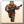
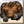
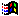
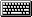
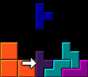
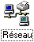
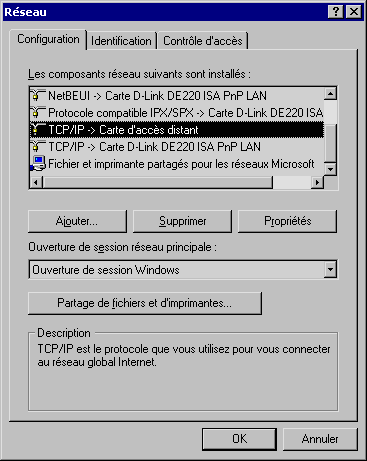
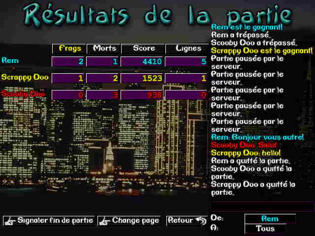
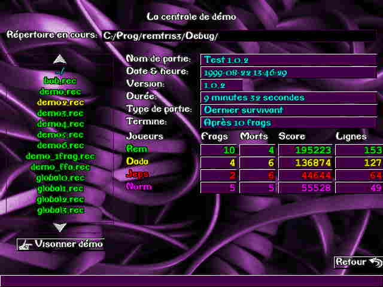

Welcome to the Quadra help file
The essential guide to a good understanding of the game, by Remz and Dada
This guide is for you if you ask yourself the following questions:
How do I unpause the game?
Why is my name "#1"?
What is a frag?
On the other hand, if those questions never troubled you (or at least
no more than 3 minutes) you should instead take a look at the
Strategy guides because, as the wise once said:
"Incomplete is your training.".
So without further ado, we will begin explaining.
In any pictures below, you can click on the various options to jump
straight to the relevent description.
The main menu
- Single-player game: Start a single-player game where the object is to score as much points as possible. A player scoring high enough can then have his performance recorded in the Worldwide Highscores list (Note: you need Internet access to enable this feature)
- Multi-player game: Access the multi-player games menu. You will then be able to play a game either on a single computer, a Local Area Network (LAN) or on the Internet.
- Demo central: The demo central is used to play back games that were previously recorded (called "demos"). You will also be able to play back games downloaded from the Internet.
- Highscores: Display the Worldwide and local highscores list.
- Player setup: Access the players' configuration screen.
- Options: Modify various options according to your preferences.
- Register: Allows you to register your copy of Quadra. If you already have done so, choosing this menu option will give you some informations about Ludus Design and links to our web site and technical support.
- Quit: When you absolutely have to...
- Version information: Informs you of the version of Quadra currently running.
- Ludus Design web site:  Windows version only: Clicking there will start your default browser and go to Ludus Design's internet site.
 TAB for next item, SHIFT + TAB for previous item, Space or Enter to select an option. You can also use the arrow keys to move from option to option. The Escape key is used to go back to the previous menu, cancel a selection or quit.
Windows users: You can use the keyboard combo ALT + TAB or CONTROL + ESC to switch to another windows application while Quadra is running. Beware, though, that a multi-player game will not be paused while you're fooling around with other applications :).
Ok, now stop gawking at this menu doing nothing! You should go setup your preferences in the Options menu. There, you'll be able to select mouse speed, CD music playing mode and some other stuff.
The options menu
- Language: You can choose between English and French.
- CD Music: This allows you to select Quadra's cd player mode.
These are the possible choices:
- No music: Listen to absolute silence.
- Auto-change track: Change CD track for each play level. This can slightly slow down level changes. In multi-player games, the track will change when you select a different graphics scheme.
- Loop all tracks: The CD will be played entirely, from the first track to the last.
- Mouse speed: Specify a number between 1 (utterly slow) and 255 (fast) for the mouse's movement speed. The default setting of 100 is a typical speed.
- TCP/IP port:
 Advanced users:
This option changes the default TCP port for
multi-player LAN or internet games. Note that if you
change this number, it will probably be impossible
to watch other players (or have them watch you) place
blocks in real-time: the blocks will instead appear
instantly at the bottom of the screen. In most cases,
the default value of 3456 is perfectly ok.
Advanced users:
This option changes the default TCP port for
multi-player LAN or internet games. Note that if you
change this number, it will probably be impossible
to watch other players (or have them watch you) place
blocks in real-time: the blocks will instead appear
instantly at the bottom of the screen. In most cases,
the default value of 3456 is perfectly ok.
- Master server address:
Advanced users:
Specify the master game server URL on the internet.
As of this writing, there is only one public master
server. It's situated on Ludus Design's website at
http://ludusdesign.com/cgibin/qserv.pl (this
is also the default value for this option). Note that
this is not a Quadra server where you would connect
and play the game: rather it's simply a listing of
public multi-player games actually going on. It is not
required to use this list to play multi-player games,
it's only a tool to help players that don't know each
other's IP address get together.
- Back to main menu: Go back to the main menu. Keyboard equivalent: ESC.
L'étape suivante est de configuré les informations du joueur. Allons rendez-vous dans ce menu.
Configurer les joueurs
- Configurer joueur: Cliquez ici pour changer le numéro du joueur à configurer. Il y a trois (3) joueurs par ordinateur. Si vous êtes plusieurs à jouer à Quadra sur votre ordinateur, vous pourrez donc configurer jusqu'à concurrence de trois joueurs avec des paramètres personnalisés. Si vous êtes seul, vous devriez normalement configuré uniquement le joueur #1.
- Nom : C'est ici que vous devrez entrer votre nom de joueur. Le nom attribué par défaut est simplement #1 pour le joueur 1, et ainsi de suite. Si vous ne changez pas votre nom, le jeu pourrait refuser de vous joindre à une partie car le nom "#1" pourrait être déjà utilisé par quelqu'un d'autre qui a eu la même idée. Vous pouvez entrer un nom ayant pour longueur maximale la largeur de la boîte d'entrée.
- Couleur : Sélectionnez la couleur
de votre choix. Dans Quadra, la couleur désigne l'équipe. Autrement dit,
tous les joueurs ROUGE présents dans la partie seront dans la même équipe. En mode solo,
votre couleur n'a aucune importance. En mode multi-joueur, lorsque vous cliquerez sur le bouton
"Démarrer" pour commencer à jouer, vous aurez la possibilité de changer votre
couleur d'équipe en fonction des autres joueurs de cette partie. En d'autres termes, il est
préférable de sélectionner sa couleur lors de la partie, et non pas dans ce menu.
Note pour la souris: dans toutes les zones de sélection de Quadra, vous pouvez appuyer sur le bouton de gauche de la souris pour avancer d'un choix, ou appuyer sur le bouton de droite pour reculer d'un choix. - Ombre : Active ou désactive l'ombre
projetée par les blocs dans le bas du canevas de jeu. Cette option sert à aider à aligner
vos blocs lors de la partie. L'ombre représente un bloc de couleur foncée situé
exactement à l'endroit où votre bloc se dirige si vous le laissez tomber directement vers le
bas.
 - Lisse : Active ou désactive le déplacement lisse des blocs. Lorsque vous déplacez le bloc, il "glisse" au lieu d'apparaître immédiatement sur la case suivante. Cette option est purement esthétique et n'affecte pas la vitesse ou la précision des déplacements.
- Vitesse clavier : Spécifie la vitesse de répétition des touches du clavier lors du jeu. Vous avez le choix entre Lent, Normal, Rapide, ou Turbo. Si vous êtes débutant, les vitesses Lent ou Normal sont pour vous. Si vous êtes surhumain, essayez Turbo. Dans tous les autres cas, la vitesse Rapide devrait être juste à point pour vous. Prenez garde qu'un joueur qui joue à une vitesse haute peut déposer beaucoup plus de blocs qu'un joueur qui joue lentement. Il est donc important de sélectionner la vitesse la plus haute possible qui vous convienne. La vitesse de répétition affecte à la fois les déplacements latéraux et la vitesse de dépôt des blocs. La vitesse de rotation n'est pas altérée.
- Changes toutes : Ce bouton
est un raccourci vers les 5 boutons de sélection de touche de jeu. Le jeu vous demandera successivement
les 5 touches.
Vous ne pouvez pas utiliser les touches suivantes: ÉCHAP, PAUSE, RETOUR. - Change touche : Sélectionnez vos touches de contrôle pour le jeu.
- Retour au menu: Retourne au menu principal. Équivalent au clavier: ÉCHAP.
La partie solo
- Démarrer quelqu'un: Cette liste de boutons permet de choisir quel joueur va participer dans cette partie. Si vos 3 choix se nomment respectivement #1, #2 et #3, vous pourriez revenir au menu de configuration des joueurs et inscrire votre nom :) Notez qu'à tout moment pendant ou avant une partie, vous pouvez appuyer sur ÉCHAP pour quitter et revenir au menu principal (ou au menu des pointages, si la partie était commencée)
La partie solo (suite)
- Blocs suivants: Dans le haut de l'écran se situe les 3 blocs qui suivent celui que vous dirigez actuellement. Celui qui suit immédiatement est le plus gros des 3 et se situe au centre du canevas.
- Canevas de jeu: Voici le fameux canevas de jeu. C'est ici que vous dirigez et déposez vos blocs dans le but de faire des lignes horizontales.
- Totaux blocs: Dans le panneau de gauche, vos avez le nombre de chaque type de bloc que vous avez déposé jusqu'à maintenant. Il y a aussi le total des blocs d'indiqué au bas.
- Totaux combos: Dans le panneau de droite se trouve le nombre de combo de ligne que vous avez effectué au cours de cette partie. Chaque fois que vous déposez un bloc qui complète une ligne horizontale, vous accumulez un "Simple". Si vous faites deux lignes simultanément, vous accumulez un "Double", et ainsi de suite.
- Pointages: En dessous du canevas, vos avez vos informations actuelles: score, total de ligne, et niveau de difficulté.
Le menu des meilleurs pointages
- Pointages mondiaux: Liste des 5 meilleurs pointages mondiaux. Cette liste peut être vide si vous n'avez pas d'accès à l'Internet. Un bouton "Visionner" à droite de chaque pointage permet de regarder la partie se dérouler devant vous. Vous aurez la possibilité de la faire jouer au ralenti (pour observer en détail une séquence intéressante) ou en accéléré.
- Valider: Attention: Ce bouton nécessite une connexion à l'Internet. Si tout fonctionne correctement, Quadra va transmettre votre meilleur pointage au serveur de partie publique, et ensuite télécharger les 5 meilleurs parties. Vous devrez patientez quelques secondes durant le transfert. Si votre partie était excellente, il se peut que vous soyez dans la liste des meilleurs parties à travers le monde, et tous pourront regarder votre exploit à leur guise.
- Pointages locaux: Cette liste illustre les 5 meilleures parties qui ont été joué sur cet ordinateur. Cliquez sur "Visionner" pour regarder les performances.
- Dernière solo: Ce bouton vous permet
de regarder votre toute dernière partie.
Note: ce bouton ne sera pas présent si votre partie est dans les 5 meilleures. - Rejouer: Appuyez ici pour recommencer une nouvelle partie solo.
- Retour: Retourne au menu principal. Équivalent au clavier: ÉCHAP.
Organiser une partie multi-joueur
- Mode local (pas de réseau):
Ce bouton sert à créer une partie multi-joueur sur votre ordinateur. Vous pouvez jouer jusqu'à
3 joueurs simultanément (en souhaitant que vous ayez tous des touches de clavier différentes).
Vous n'avez pas besoin d'être connecté en réseau pour utiliser ce mode de jeu.
Astuce: on peut aussi utiliser ce mode pour se pratiquer seul. Étant donné que la partie sera en mode multi-joueur, vous pourrez recommencer aussi souvent que vous le voulez, ce qui est plus pratique que le mode solo. Par contre, vous ne pourrez pas obtenir votre nom de la liste des meilleurs pointages. - TCP/IP réseau LAN:
Cliquez sur ce bouton-ci pour jouer une partie en réseau avec d'autres ordinateurs sur un réseau
local. Vous devez avoir le protocole TCP/IP installé dans votre système d'exploitation.
Utilisateurs Windows: pour savoir ce protocole est installé dans votre système, ouvrez les propriétés du réseau  du panneau de configuration. Vous devriez obtenir une fenêtre qui ressemble à celle-ci:

Vérifiez que vous avez bien un protocole TCP/IP dans la liste. Celui qui s'appelle "Carte d'accès distant" sert à vous connecter à l'Internet. Si vous avez une carte réseau dans votre ordinateur, il est possible de voir un deuxième TCP/IP (ou même davantage). Si vous avez du trouble à faire fonctionner Quadra dans ce mode multi-joueur, envoyez un courriel à notre support technique: support@ludusdesign.com - TCP/IP réseau Internet: Semblable au mode TCP/IP LAN, ce mode de jeu vous permet de vous connecter avec d'autres ordinateurs en utilisant le protocole TCP/IP. En plus, ce mode offre la possibilité de créer des parties dites "publiques" qui pourront être vues à travers le monde entier.
Créer une partie multi-joueur
- Nom:
Entrez le nom de la partie.
Note: en mode local, cet item n'est pas disponible. - Publique Oui/Non:
Permet ou non la visibilité de votre partie à travers l'Internet. Quadra "parlera"
avec le serveur de partie publique indiqué dans les options
pour signaler la création de votre partie. Ainsi, les autres personnes qui consulteront la
liste des parties disponibles verront la vôtre. Choisissez "Non" si vous ne voulez pas la rendre
publique. Notez que vos amis pourront tout de même se joindre à votre partie si vous leur
communiquer votre adresse IP. Cela vous permet de faire des parties privées.
Note: en mode local et en mode LAN, cet item n'est pas disponible. - Type de partie:
Il y a 2 types de parties:
- Partie libre: Obtenez des points (frags) pour chaque adversaire que vous tuez. Si vous mourez,
vous n'aurez alors qu'à appuyer sur une de vos touches pour recommencer de plus bel.
Utilisateurs avancés: pour comprendre le fonctionnement des frags,
cliquez ici.
- Dernier survivant: Similaire au mode Partie libre, excepté que vous ne pouvez pas recommencer immédiatement après avoir été tué. Vous devrez attendre la fin de la manche, qui se termine lorsqu'un joueur (ou son équipe) devient le dernier survivant. Ensuite, tous les joueurs seront automatiquement redémarrés pour la manche suivante. Pendant que vous patientez, profitez-en pour observer vos ennemis ou pour encourager vos coéquipiers qui sont encore en vie :)
- Partie libre: Obtenez des points (frags) pour chaque adversaire que vous tuez. Si vous mourez,
vous n'aurez alors qu'à appuyer sur une de vos touches pour recommencer de plus bel.
- Changement de niveau: Détermine si le niveau de difficulté du jeu augmente à chaque fois que vous avez obtenu 15 lignes. Cette option peut s'avérer utile si vous jouez contre quelqu'un de trop fort et qui semble invincible (surtout en mode "Partie libre); ainsi, plus il joue longtemps, plus son niveau de difficulté augmentera, et il finira bien par crever!
- Niveau de départ: Sélectionnez le niveau de difficulté de départ. Plus vous sélectionnez un niveau élevé, plus la vitesse de descente des blocs sera rapide. Conseil: vous devriez laisser le niveau à 1 si vous jouez avec des débutants.
- Lignes pour attaquer:
Le nombre de ligne requis pour attaquer les adversaires. La valeur par défaut étant un
"double". Ce qui signifit que tout ce qui est moins qu'un double (exemple: un simple) n'attaquera
pas les adversaires. Plus vous sélectionnez un nombre élevé, plus il sera difficile
d'attaquer ses adversaires.
Conseil: vous devriez laisser le niveau à "double" si vous jouez avec des débutants.
Autre conseil: vous pourrez expérimenter un niveau plus élevé si vous voulez jouer contre plusieurs adversaires de calibre expert. Par exemple, si vous choisissez "5-lignes" comme minimum, vous vous trouverez alors à "calmer" beaucoup les petits échanges de lignes. - Termine quand:
Indique à quel moment la partie doit prendre fin. Vous avez le choix parmi:
- Jamais: le serveur (créateur) de la partie devra la terminer manuellement.
- Après "X" frags: lorsqu'une équipe aura atteint X frags.
- Après "X" minutes: un compte à rebours indiquera le temps restant.
- Enregistre la partie:
Si vous désirez enregistrer cette partie pour la conserver. Entrez un nom de fichier dans la
boîte de texte qui apparaîtra.
Note: Quadra ajoute automatiquement l'extension .REC aux fichiers de démo. - Créer: Créer la partie et vous transporte dans l'écran de jeu multi-joueur.
- Enregistrer: Sert à conserver ces paramètres de création de partie par défaut.
- Retour: Retourne au menu précédent.
Multi-joueur TCP/IP: Créer ou joindre
- Créer: Cliquez là-dessus pour créer une nouvelle partie dont vous serez le serveur et l'administrateur.
- Rafraîchir la liste: Sert à mettre à jour la liste des parties.
- Informations d'une partie: Donne les renseignements sur la partie sélectionnée dans la liste de gauche.
- Liste des parties: Ici sont listées les parties présentement disponibles. Cliquez sur le nom d'une partie pour la sélectionner.
- Liste des joueurs d'une partie: Affiche la liste des joueurs actuellement présents dans la partie sélectionnée.
- Joindre: Cliquez ici pour vous joindre à une partie.
- Connecter à une adresse:
Vous pouvez entrer directement une adresse IP ou une adresse URL à laquelle se trouve un serveur
de partie Quadra.
Note: en mode TCP/IP Internet, un bouton supplémentaire nommé "Carnet d'adresse" sera disponible. Ce bouton vous permet d'entrer vos adresses IP les plus fréquemment utilisées. - Information IP: Cliquez ici pour afficher votre adresse IP personnelle. Vous pouvez avoir plus d'une adresse selon votre configuration réseau.
- Retour: Retourne au menu précédent.
En principe, si la recherche a fonctionné et qu'il y a des parties disponibles, vous verrez alors la liste apparaître. Il vous suffit de cliquer sur le nom d'une partie pour la sélectionner, puis ensuite cliquez sur le bouton "Joindre la partie" pour vous y joindre. Note pour la souris: vous pouvez faire un double-clique sur le nom de la partie.
Note: si la partie que vous avez sélectionnée a été créée par un serveur Quadra qui n'est pas exactement de la même version que le vôtre, vous ne pourrez pas joindre celle-ci. Allez sur notre site web pour consulter les plus récentes mises à jour de Quadra à l'adresse http://www.ludusdesign.com/quadra_fr.html.
Dans tous les cas, quand vous aurez fini par joindre ou créer une partie, vous arriverez dans l'écran du jeu multi-joueur, qui sera décrit ci-dessous.
L'écran de jeu multi-joueur
- Démarrer un joueur:
Cliquer sur un de ces boutons pour démarrer un joueur.
Note: si un joueur a déjà été démarré mais que le panneau avait été fermé, le mot "Démarrer" sera remplacé par "Continuer" pour signaler que ce joueur est en cours. - Affiche les joueurs: Affiche le panneau résumé de la liste des joueurs. C'est aussi dans ce panneau que vous pourrez observer vos adversaires.
- Information blocs: Affiche le panneau des statistiques de blocs qui ont été déposés.
- Information lignes: Similaire au panneau des blocs, mais avec les lignes accomplies par joueur.
- Choisir le thème:
Permet de sélectionner l'image de fond et les effets sonores en fonction du niveau de 1 à 10.
Note: pour pouvoir choisir un thème, vous devez l'avoir atteint préalablement en mode solo! Par exemple, pour pouvoir choisir le thème du niveau 8, vous devez avoir réussi à vous rendre jusqu'au niveau 8 dans une partie solo. - Fenêtre de chat:
Ouvre le panneau de dialogue (chat).
Note: ce bouton n'est visible qu'en mode multi-joueur TCP/IP (LAN ou Internet) - Fonctions du réseau:
Affiche le panneau des fonctions relatives au réseau.
Note: ce bouton n'est visible qu'en mode multi-joueur TCP/IP (LAN ou Internet) - Quitte:
Ceci met fin à votre joueur (ou vos joueurs) et vous transporte dans l'écran des résultats.
Si la partie ne contenait aucun joueur, ce bouton vous ramène au menu précédent. Notez
que si vous êtes serveur, ceci ne termine pas la partie: les autres ordinateurs pourront
continuer de jouer, tant que vous ne signalerez pas la fin de partie (voir le menu des résultats).
Note: ce bouton n'est visible que lorsque le panneau de droite est fermé.
Ce dernier indique que la partie est temporairement suspendue, ou encore quelle n'est pas commencée. Seul le serveur peut signaler le départ en appuyant sur la touche PAUSE. Un décompte de 5 secondes s'en suivra, puis la partie débutera pour de bon. Si vous voulez temporairement suspendre la partie, vous n'avez qu'à appuyer sur PAUSE. Par la suite, aucun autre joueur ne pourra enlever la fonction pause à part le serveur et vous-même. Autrement dit, si le serveur décide de mettre pause, personne d'autre ne peut l'enlever.
Note: le jeu débute sur PAUSE en mode multi-joueur TCP/IP (LAN ou Internet) seulement.
Multi-joueur: démarrer un joueur
- Démarrer:
Démarre ce joueur dans l'équipe indiquée par la couleur sélectionnée.
Ce bouton demande la permission au serveur pour démarrer un nouveau joueur. Il se peut que le
serveur rejette votre demande. Voici les raisons possibles:
- Le serveur refuse les joueurs: Le créateur de partie refuse les nouveaux joueurs. Peut être que vous devriez tenter de dialoguer avec lui dans la fenêtre de chat pour demander l'autorisation.
- Nom déjà utilisé: Un joueur utilisant exactement le même nom que vous existe déjà dans la partie. Vous devez changer de nom pour pouvoir joindre cette partie, ou demander à l'administrateur d'éliminer le joueur pour vous laisser la place.
- La partie est terminée: Si cette partie est déjà terminée, vous ne pouvez plus joindre de joueur.
- Choisir l'équipe: Cliquez ici pour changer d'équipe avant de vous joindre à la partie. Vous avez l'opportunité de constater quels joueurs sont déjà dans la partie, ou encore quelle équipe semble le plus avoir besoin de votre coup de main.
- Joueurs dans l'équipe: Cette liste illustre les joueurs déjà présents dans l'équipe que vous avez présentement sélectionnée.
Toutefois, au moment où vous aviez sorti (volontairement ou involontairement), vous allez être considéré comme quelqu'un de mort. En mode dernier survivant, cela pourrait avoir pour effet de terminer une manche, considérant que vous étiez le seul adversaire encore vivant.
Multi-joueur: un joueur en cours de partie
- Blocs suivants: Cette zone illustre les 3 blocs suivant celui que vous contrôler présentement.
- Ferme: Ce bouton ferme le panneau et retourne au panneau principal.
- Canevas de jeu: Cette dans cette région que vous déposez allègrement vos blocs.
- Lignes en attente: Cette zone indique combien de lignes vous allez recevoir de vos adversaires. Plus la colonne devient haute, plus vous recevrez de lignes lorsque vous déposerez votre prochain bloc. Utilisez cette information judicieusement, votre survie en dépendra!
- Vos informations:
Dans le bas de l'écran, vous verrez vos informations courantes:
- Score: Indique votre pointage actuel.
- Lignes: Un premier champ indique le nombre de ligne accomplie au cours de cette vie, tandis que l'autre indique le nombre cumulatif de ligne accompli au cours de la partie.
- Frags: Indique le nombre d'adversaire que vous avez tué sans pitié. Pour tuer quelqu'un, il faut lui envoyer des lignes et provoquer son décès. Pour savoir exactement comment fonctionne les frags, consultez le guide de stratégie multi-joueur.
- Morts: Indique le nombre de fois que vous êtes mort.
- Niveau: Votre niveau de difficulté.
Multi-joueur: afficher les joueurs

- Liste des joueurs:
Liste des joueurs actifs dans la partie présentement. Les joueurs provenant des autres ordinateurs
connectés à cette partie seront inscrits dans un bouton. Vous pouvez cliquer sur le nom d'un
de ces joueurs, puis ensuite cliquer sur le bouton "Observe sélectionnés" pour les voir en pleine action. Si vous
sélectionnez seulement 1 joueur, il sera affiché en pleine grandeur dans le panneau. Si vous
en sélectionnez 2,3 ou 4, ils seront affichés en format réduit.
Note: vous ne pouvez pas observer un joueur qui a été déconnecté ou qui a quitté la partie. - Affiche quoi: Cliquez ici pour changer quel renseignement sera affiché à droite de chaque nom de joueur. Vous pouvez choisir parmi: Frags & Morts, Score, Blocs, et Lignes.
Multi-joueur: affiche les statistiques de blocs
- Totaux par bloc: Indique le nombre de bloc de chaque type qui ont été déposé au cours de la partie, ainsi que le total de tous les blocs. Vous pouvez comparer la vitesse d'un joueur par rapport à un autre en regardant lequel a déposé le plus de bloc. Toutefois, il est possible que les deux joueurs n'aient pas commencé à jouer au même moment.
- Joueur vs joueur: Cliquez sur le nom d'un joueur pour passer au joueur suivant.
Multi-joueur: affiche les statistiques de lignes
- Totaux des lignes: Indique le nombre de combo de ligne ont été exécuté par chaque joueur. Le total des lignes est aussi indiqué dans le bas.
- Joueur vs joueur: Cliquez sur le nom d'un joueur pour passer au joueur suivant.
Multi-joueur: fenêtre de dialogue (chat)
- Zone de dialogue: Affiche le dialogue qui a eu lieu. Les lignes de textes provenant des autres joueurs seront en fonction de la couleur de leurs équipes.
- Zone d'entrée:
Cliquez dans cette zone pour entrer une ligne de texte. Si vous êtes en pleine partie, tâchez
de taper rapidement car vous ne pourrez plus contrôler votre joueur pendant que vous entrez votre message!
Raccourci au clavier: Appuyez sur RETOUR pour commencer à taper, puis RETOUR une deuxième fois pour l'émettre. Vous pouvez faire ECHAP pour annuler la ligne de texte en cours. - De qui: Cette zone vous permet de modifier la provenance de vos messages. Étant donné que vous pouvez configurer jusqu'à 3 joueurs par ordinateur, vous pouvez décider de "qui" proviennent les messages que les autres ordinateurs recevront de vous.
- A qui: Détermine à qui vous désirez émettre vos messages. Vous pouvez choisir TOUS pour l'envoyer à tous les autres joueurs, ou choisir une couleur d'équipe pour l'envoyer uniquement à cette équipe.
Multi-joueur: les fonctions réseau
- Ferme joueur:
Affiche la liste des joueurs présents dans la partie, et permet de les éliminer.
Note: ce bouton n'est visible que sur l'ordinateur serveur. - Ferme connexion:
Affiche la liste des connexions réseaux en cours, et vous permet de les éliminer.
Si vous fermez une connexion, vous vous trouverez en même temps à éliminer les joueurs
qui étaient sur cet ordinateur.
Note: ce bouton n'est visible que sur l'ordinateur serveur. - Accepte joueur:
Permet d'empêcher les nouveaux joueurs de s'ajouter à votre partie. Tant que cette option sera
à "Non", les joueurs qui tenteront de se joindre recevront un message disant "Le serveur a refusé
votre demande". Néanmoins, ils pourront dialoguer avec vous grâce à la fenêtre de chat.
Note: cette option n'est visible que sur l'ordinateur serveur. - Accepte connexion:
Permet d'empêcher toute tentative de connexion à votre partie. Utilisez cette fonction pour
assurer votre sécurité au cas où des personnes malfaisantes tenteraient de vous
nuire. Prenez garde toutefois que personne ne pourra se connecter pendant que cette option est
à "Non".
Note: cette option n'est visible que sur l'ordinateur serveur. - Tester Ping: Cliquez sur ce bouton pour connaître le temps réponse entre votre ordinateur et le serveur. Si vous avez un temps dépassant 2000 millisecondes, votre connexion est lente, et tous les événements du jeu risquent d'arriver en retard. Si vous êtes vous-même le serveur, ce temps devrait être 10 millisecondes environ.
- M.A.J. des joueurs observés:
Permet de décider la fréquence des mises à jour visuelles des joueurs observés.
Par exemple, si vous indiquez 10 et que vous observez votre adversaire dans un autre panneau, Quadra
transmettra 10 mises à jour par seconde afin que vous puissiez suivre ses déplacements.
Si votre connexion est lente, vous pouvez mettre 0 pour complètement désactiver les mises à
jour. Vous pourrez tout de même observer les autres joueurs, cependant, leurs blocs vont sembler
"apparaître" directement au lieu de se déplacer. Si vous êtes sur un réseau local
à grande vitesse, vous pouvez tenter de mettre une valeur plus élevée pour obtenir
des déplacements beaucoup plus fluides. Prenez notes des points suivants:
- Le changement de vitesse de mise à jour s'effectue en temps réel. Cependant, si vous voulez constater les changements de vitesses demandés par les autres joueurs, vous devrez fermer puis rouvrir ces joueurs si vous les observiez déjà.
- A titre d'indication, sur Internet avec un modem 56.6Kps, vous devriez tenir ce nombre autour de 10 ou moins. Sur un LAN, autour de 30 devrait être acceptable et assez fluide. Faites vos expérimentations!
- Il se peut que malgré que vous ayez demandé 50 mises à jour, un joueur en particulier semble rester saccadé ou immobile. La raison est que cet ordinateur a peut-être spécifié une vitesse de rafraîchissement d'environ 0, et que Quadra va s'ajuster selon la vitesse la plus basse des 2 ordinateurs.
- Si vous observez des joueurs en format réduit (c'est à dire plusieurs joueurs dans le même panneau), Quadra va automatiquement diminuer de moitié la vitesse de rafraîchissement, étant donné la petite dimension des ces canevas.
- Information IP:
Indique votre adresse IP actuelle.
Multi-joueur: l'écran des résultats
 - Titre des colonnes: Cliquez sur le titre d'une colonne pour sélectionner l'ordre de tri des joueurs.
- Totaux par joueur: Cette région indique les divers totaux par joueurs avec des totaux cumulatifs par équipe.
- Signaler fin de partie:
Ce bouton sert à signaler la fin de la partie à tous les joueurs actifs présentement.
Une fois la fin signalée, personne ne pourra se joindre à cette partie, car elle sera considérée
comme terminée. Si, lors de la création de cette partie, vous aviez choisi qu'elle se termine
au bout de X minutes ou lorsqu'une équipe atteint X frags, vous pouvez décider
de mettre fin avant l'échéance. Par ailleurs, ce bouton disparaîtra si la partie est
déjà terminée.
Note: ce bouton n'est visible que sur l'ordinateur serveur ET en mode multi-joueur TCP/IP - Changer de page: Cliquez ici pour changer de page de statistiques.
- Retour:
Ce bouton vous retourne au menu précédent et vous déconnecte de la partie. Si vous
étiez le serveur, ceci à pour effet d'émettre un message "Le serveur a été
déconnecté" aux autres ordinateurs, et cela interrompt leurs parties s'ils étaient
encore actifs.
Note: Les autres joueurs ne pourront plus dialoguer entre eux si vous sortez de l'écran des résultats, car tous les messages doivent absolument passer par le serveur. - Zone de dialogue (chat):
Cette zone est exactement identique au panneau "fenêtre de chat" de l'écran de jeu. Vous
pouvez ainsi continuer à dialoguer avec les autres joueurs malgré que la partie soit terminée.
Note: ce panneau n'est visible qu'en mode multi-joueur TCP/IP (LAN ou Internet)
La centrale de démo
 - Répertoire en cours: Vous pouvez taper un répertoire différent de celui proposé par défaut (qui se trouve à être le répertoire où est installé Quadra).
- Information: Cette zone indique les renseignements sur la partie sélectionnée dans la liste de gauche, ainsi que la liste des joueurs et leurs statistiques lors de la fin de partie.
- Liste des fichiers: Cette liste affiche tous les
fichiers *.REC trouvés dans le répertoire en cours. Cliquez sur un fichier pour le
sélectionner, ou double-cliquez pour passez directement au visionnement.
Note: vous remarquerez que les fichiers de démo appelés GLOBALx.REC et LOCALx.REC correspondent aux démos des meilleurs pointages mondiaux et locaux. - Visionner démo: Ce bouton vous transporte dans l'écran de jeu afin de regarder se dérouler la partie que vous avez choisie. Des boutons de contrôle Vitesse lente et Vitesse rapide seront disponible lors du déroulement de la partie.
- Retour: Retourne au menu principal.
support@ludusdesign.com ©1999 Ludus Design. Tous droits réservés. Dernière mise à jour: 1999-08-23